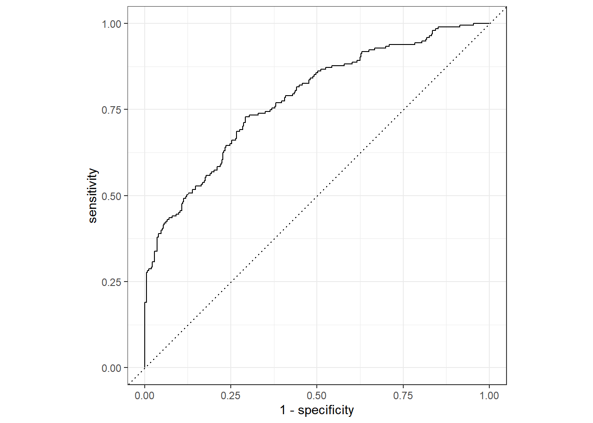
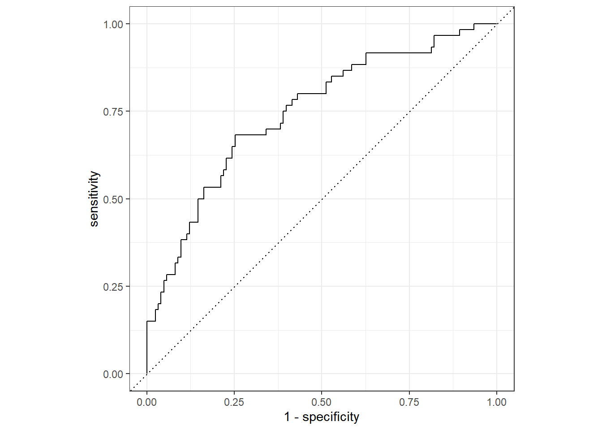
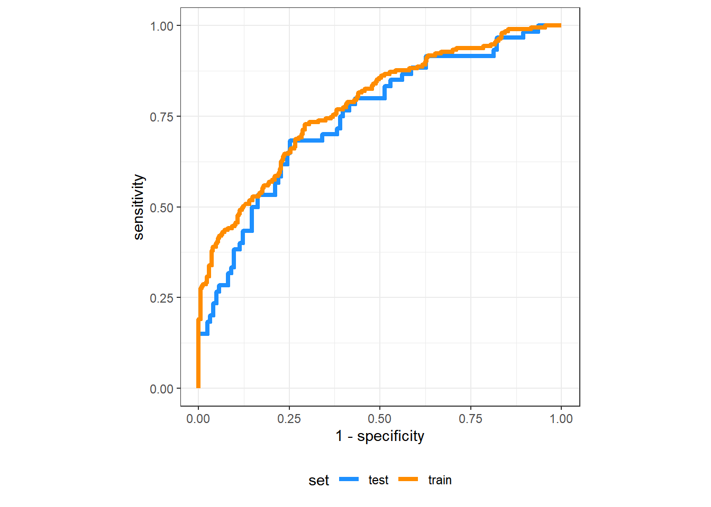
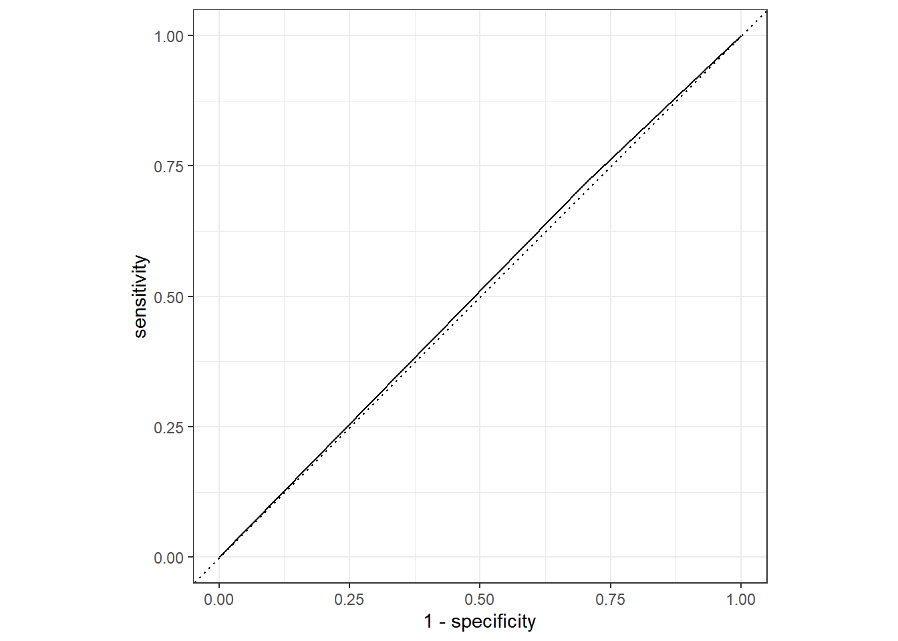
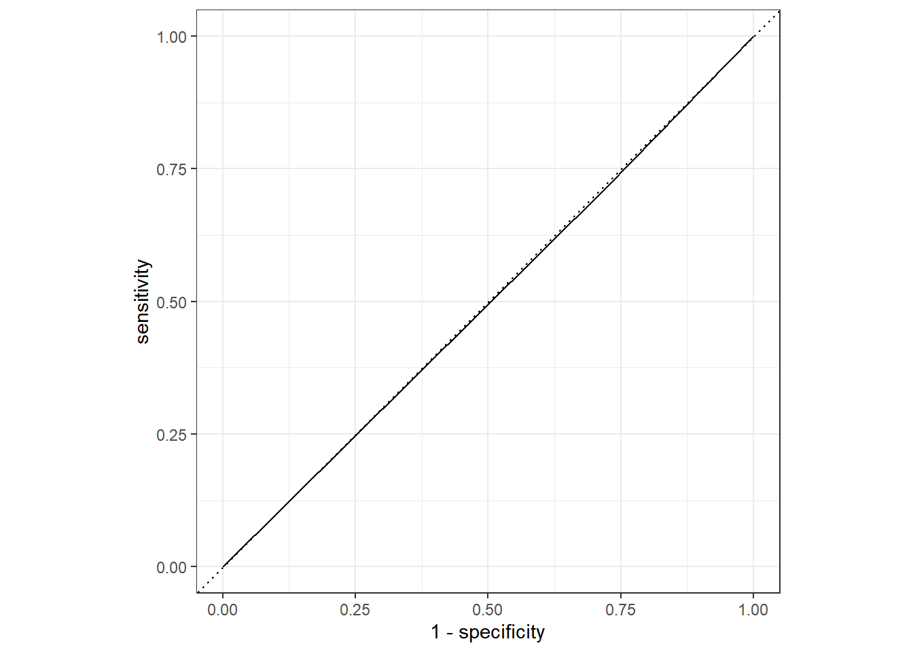

dat <- readr::read_rds(here::here("fluanalysis", "data",
"clean-data.Rds"))Flu analysis: Model evaluation
In this document, we’ll fit some models using more advanced tools from the tidymodels ecosystem, and we’ll dive a bit deeper into model evaluation.
Setup
As usual, we’ll start by loading the data.
Now, we’ll split the data into a training and a testing set, like we discussed in the course module. We’ll then only touch the training set during our model fitting process.
# Set the seed so we can get the exact same split if you want
set.seed(470)
dat_split <- rsample::initial_split(dat)
# This part gets a data frame of the training set.
train <- rsample::training(dat_split)
# And the test set
test <- rsample::testing(dat_split)Categorical outcome models
OK, we’ll start by training some models for the Nausea outcome. First we need to create a workflow, which is made from a recipe and a model specification. A few pages ago, I said that a specification was the list of equipment you need for your cookies. Of course, the recipe tells you what ingredients you need and how to get them ready. The workflow is a more comprehensive version of this – if the recipe says “bake at 350 for 15 minutes”, then the workflow would be a version that says “pick the tray of cookies up, put it in the oven, close the door, wait 15 minutes, take the tray out of the oven, and move the cookies to a cooling rack.”
Note
I would prefer if recipes were called “preprocessors” and workflows were called “recipes”. So this analogy isn’t perfect. Right now the recipe part is basically the ingredients section of a cookbook recipe and the specification part is the methods section of a cookbook recipe, but I try to follow what the developers say so if my analogy isn’t helpful you can ignore it.
Model fitting with workflow
First we’ll make the model specification, it will be the same as last time.
logistic_model <- parsnip::logistic_reg() |>
parsnip::set_mode("classification") |>
parsnip::set_engine("glm")Next we’ll make a workflow, using R’s formula syntax.
nausea_all_pred_rec <- recipes::recipe(Nausea ~ ., data = train)Now we’ll bundle the recipe and the model specification together into a workflow.
nausea_all_pred_wf <- workflows::workflow() |>
workflows::add_recipe(nausea_all_pred_rec) |>
workflows::add_model(logistic_model)Fortunately, once we have the workflow it is very easy to “train our workflow” (AKA fit the workflow to our training data).
nausea_all_pred_fit <-
nausea_all_pred_wf |>
parsnip::fit(data = train)If you print out the nausea_all_pred_fit and the nausea_all_pred_wf objects, you can see what gets filled in when the workflow goes from being untrained to being trained.
Model evaluation
One of the most common metrics for evaluating a logistic regression model is the Area Under the Receiver Operating Characteristic Curve (AUROCC) or ROC AUC (the same acronym but flipped a bit), or just AUC for short. We’ll first evaluate our logistic regression model by examining the ROC curve and its AUC when we use our model to predict the response on the training data.
First we’ll get the predictions on the training data. You might get the rank deficiency error again, that’s ok! The broom package makes this quite easy, in the old days you used to have to predict() and merge() and it was kind of terrible. But now we can just do this.
nausea_all_pred_aug <-
broom::augment(nausea_all_pred_fit, train)Warning in predict.lm(object, newdata, se.fit, scale = 1, type = if (type == :
prediction from a rank-deficient fit may be misleading
Warning in predict.lm(object, newdata, se.fit, scale = 1, type = if (type == :
prediction from a rank-deficient fit may be misleadingNow let’s look at the ROC curve for our training data. For this plot I’ll also include some example code to save it to a file, but I won’t do that for the rest because I don’t need these files again.
# Make the roc curve
nausea_all_pred_roc <-
nausea_all_pred_aug |>
yardstick::roc_curve(truth = Nausea, .pred_Yes, event_level = "second")Warning: Returning more (or less) than 1 row per `summarise()` group was deprecated in
dplyr 1.1.0.
ℹ Please use `reframe()` instead.
ℹ When switching from `summarise()` to `reframe()`, remember that `reframe()`
always returns an ungrouped data frame and adjust accordingly.
ℹ The deprecated feature was likely used in the yardstick package.
Please report the issue at <https://github.com/tidymodels/yardstick/issues>.# Print it on this page
nausea_all_pred_roc |> ggplot2::autoplot()
# Save it to a file so I can put it in my project later
ggsave(
plot = nausea_all_pred_roc |> ggplot2::autoplot(),
width = 6.5,
height = 6.5,
dpi = 300,
filename = here::here("fluanalysis", "results", "nausea-all-pred-train-roc.png")
)Now let’s look at the curve for the test data. Note that our model is fitted to the training data, but we are getting the predictions on the test data. You never want to fit the model to the test data!!!!!!
nausea_all_pred_aug_test <-
broom::augment(nausea_all_pred_fit, test)Warning in predict.lm(object, newdata, se.fit, scale = 1, type = if (type == :
prediction from a rank-deficient fit may be misleading
Warning in predict.lm(object, newdata, se.fit, scale = 1, type = if (type == :
prediction from a rank-deficient fit may be misleadingnausea_all_pred_roc_test <-
nausea_all_pred_aug_test |>
yardstick::roc_curve(truth = Nausea, .pred_Yes, event_level = "second") |>
autoplot()
nausea_all_pred_roc_test
If you want to plot both of the curves on the same plot, it takes a little bit more finagling, but we can do it. This is probably not the best way to code this, but it is an easy way to do it for sure.
dplyr::bind_rows(
"train" = nausea_all_pred_aug |>
yardstick::roc_curve(truth = Nausea, .pred_Yes, event_level = "second"),
"test" = nausea_all_pred_aug_test |>
yardstick::roc_curve(truth = Nausea, .pred_Yes, event_level = "second"),
.id = "set"
) |>
ggplot() +
aes(
x = 1 - specificity,
y = sensitivity,
color = set
) +
# Note that we use geom_path() to keep ggplot2 from automatically sorting
# the data, which will make the test curve look weird.
geom_path(linewidth = 1.5) +
coord_fixed(ratio = 1) +
scale_color_manual(values = c("dodgerblue", "darkorange")) +
theme_bw() +
theme(legend.position = "bottom")
We can also get the numeric AUCs for both data sets.
nausea_all_pred_aug |>
yardstick::roc_auc(truth = Nausea, .pred_Yes, event_level = "second")# A tibble: 1 × 3
.metric .estimator .estimate
<chr> <chr> <dbl>
1 roc_auc binary 0.780nausea_all_pred_aug_test |>
yardstick::roc_auc(truth = Nausea, .pred_Yes, event_level = "second")# A tibble: 1 × 3
.metric .estimator .estimate
<chr> <chr> <dbl>
1 roc_auc binary 0.747The two AUCs are pretty similar, which means our model is probably not overfitting by that much, and they are actually OK. This model might be pretty decent.
Model comparison
Next we’ll repeat basically the same steps, but instead of a model with every predictor, we’ll use a model that only has RunnyNose as a predictor. I’ll do most of the code with very little explanation, because you can follow the explanation from the above part.
Here’s the fitting part.
# Recipe with only runny nose
nausea_rn_rec <- recipes::recipe(Nausea ~ RunnyNose, data = train)
# Workflow with only runny nose
nausea_rn_wf <-
workflows::workflow() |>
workflows::add_recipe(nausea_rn_rec) |>
workflows::add_model(logistic_model)
# Fit model with only runny nose
nausea_rn_fit <-
nausea_rn_wf |>
parsnip::fit(data = train)Now we evaluate the fit on the training data.
# Examine ROC on training data
nausea_rn_aug <- broom::augment(nausea_rn_fit, train)
nausea_rn_roc <-
nausea_rn_aug |>
yardstick::roc_curve(truth = Nausea, .pred_Yes, event_level = "second") |>
autoplot()
nausea_rn_roc
nausea_rn_auc <-
nausea_rn_aug |>
yardstick::roc_auc(truth = Nausea, .pred_Yes, event_level = "second")
nausea_rn_auc# A tibble: 1 × 3
.metric .estimator .estimate
<chr> <chr> <dbl>
1 roc_auc binary 0.508And finally we evaluate the fit on the testing data.
# Examine ROC on testing data
nausea_rn_aug_test <- broom::augment(nausea_rn_fit, test)
nausea_rn_roc_test <-
nausea_rn_aug_test |>
yardstick::roc_curve(truth = Nausea, .pred_Yes, event_level = "second") |>
autoplot()
nausea_rn_roc_test
nausea_rn_auc_test <-
nausea_rn_aug_test |>
yardstick::roc_auc(truth = Nausea, .pred_Yes, event_level = "second")
nausea_rn_auc_test# A tibble: 1 × 3
.metric .estimator .estimate
<chr> <chr> <dbl>
1 roc_auc binary 0.497To be honest, those are some of the worst ROCs I’ve ever seen! It is clear that runny nose status does not predict nausea very well, and the predictive power that we saw before must be coming from somewhere else. Note that our ROC curve here looks mostly like a straight line – since we only have one dichotomous predictor, our model is only capable of giving us two discrete outputs. We get one predicted probability of nausea when there is no runny nose, and one for patients who do have a runny nose. Since we only get two probabilities, our ROC curve only has three points that define it: we assign everyone no (0% sensitivity, 100% specificity), we assign everyone yes (100% sensitivity, 0% specificity), or we assign one probability to yes and the other to no. So if this predictor were a bit more predictive, we would see a sort of angle shape for our ROC curve where it bends exactly once. Our ROC curve was really bendy in the full model cause there were a lot of these probability cutoffs to evaluate.
OK, that’s all I’ll say about that and now we are on to the continuous outcome models.
Continuous outcome models
Recall that our continuous outcome of interest was body temperature, so for this section we will fit Gaussian linear regression models. Note that other than using linear_reg() instead of logistic_reg(), making and fitting the workflow is exactly the same, so I’ll go ahead and do it.
Model fitting with workflow
lm_mod <-
parsnip::linear_reg() |>
parsnip::set_engine("lm") |>
parsnip::set_mode("regression")
# BodyTemp is the outcome, use all predictors
lm_rec_all <- recipes::recipe(BodyTemp ~ ., data = train)
lm_wf_all <-
workflows::workflow() |>
workflows::add_recipe(lm_rec_all) |>
workflows::add_model(lm_mod)
# Fit the model
lm_fit_all <-
lm_wf_all |>
parsnip::fit(data = train)
lm_fit_all_train <- broom::augment(lm_fit_all, train)Warning in predict.lm(object = object$fit, newdata = new_data, type =
"response"): prediction from a rank-deficient fit may be misleadinglm_fit_all_test <- broom::augment(lm_fit_all, test)Warning in predict.lm(object = object$fit, newdata = new_data, type =
"response"): prediction from a rank-deficient fit may be misleadingUnfortunately we don’t get any pretty ROC plots for our continuous outcome. (Well, I guess we could, but we would have to dichotomize the outcome and that is something we encourage you all NOT to do!!) In the next exercise we’ll talk more about how to visualize these kinds of results, for now we’ll just calculate the RMSE.
lm_all_rmse_train <-
lm_fit_all_train |>
yardstick::rmse(truth = BodyTemp, estimate = .pred)
lm_all_rmse_test <-
lm_fit_all_test |>
yardstick::rmse(truth = BodyTemp, estimate = .pred)
lm_all_rmse_train# A tibble: 1 × 3
.metric .estimator .estimate
<chr> <chr> <dbl>
1 rmse standard 1.09lm_all_rmse_test# A tibble: 1 × 3
.metric .estimator .estimate
<chr> <chr> <dbl>
1 rmse standard 1.21Our RMSE is a bit higher on the test data than it is on the training data, which we expect. Unlike the ROC AUC though, this is not a unitless measure of performance! Of course if our model were perfect, it would be 0, but there is no absolute maximum and we have to interpret this in the context of the units of the outcome. I think it is pretty fair to say that 1.09 temperature degrees (Fahrenheit) is not that much less than 1.21, it is about 0.1 degrees less, which was the degree of precision to which our measurements were taken anyways. If we really wanted a basis of comparison for these, we would also fit a null model, which we’ll talk about in the next exercise as well. We could also use a metric like \(R^2\) which has an absolute range.
OK, now let’s move on to fitting the reduced model.
Model evaluation and comparison.
Now we’ll fit a model that only has RunnyNose as a predictor and do the same steps. Again, this works exactly the same as the previous example so I’m skipping a lot of the details.
# Set up a workflow where RunnyNose is the only predictor
lm_rec_rn <- recipes::recipe(BodyTemp ~ RunnyNose, data = train)
lm_wf_rn <-
workflows::workflow() |>
workflows::add_recipe(lm_rec_rn) |>
workflows::add_model(lm_mod)
# Fit the model
lm_fit_rn <-
lm_wf_rn |>
parsnip::fit(data = train)
lm_fit_rn_train <- broom::augment(lm_fit_rn, train)
lm_fit_rn_test <- broom::augment(lm_fit_rn, test)That’s really all it takes to get the models, and getting the RMSE is just as easy.
lm_rn_rmse_train <-
lm_fit_rn_train |>
yardstick::rmse(truth = BodyTemp, estimate = .pred)
lm_rn_rmse_test <-
lm_fit_rn_test |>
yardstick::rmse(truth = BodyTemp, estimate = .pred)
lm_rn_rmse_train# A tibble: 1 × 3
.metric .estimator .estimate
<chr> <chr> <dbl>
1 rmse standard 1.17lm_rn_rmse_test# A tibble: 1 × 3
.metric .estimator .estimate
<chr> <chr> <dbl>
1 rmse standard 1.23Both of these models are worse than the full models, but like I said before, we have to interpret these in the units of the response (BodyTemp). So when we do that, I think we can say that this model is not that much worse. Which likely means our predictors are just not going a great job of modeling BodyTemp at all, in real life we would definitely want to do the null model comparison to see what is going on here.
Wrap-up
OK, that is the end of this assignment. We managed to fit models to both continuous and categorical outcomes, get some easy measures of their performance, and also compare them to simpler models. (Note that we did not compare the continuous and categorical models to each other, it usually does not make a lot of sense to compare models with different responses.) That’s all for this time, the next exercise will cover a lot more of this stuff in further detail.